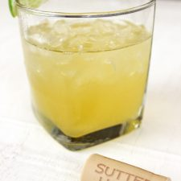

Star Gaer, Coctel
Ingredientes
- 2 oz (60 ml) Sutter Home Chardonnay
- 1/2 oz (15 ml) ron dorado
- 1 oz (30 ml) jugo de piña
- 1/2 oz (15 ml) de almíbar de vainilla
- 1 gajo de lima
- Hielo
Preparacion
- En un vaso ir agregando los ingredientes: Sutter Home Chardonnay, ron dorado, jugo de piña y almíbar de vainilla.
- Finalmente agregar hielo, revolver un poco y agregar un gajo de lima en el vaso.